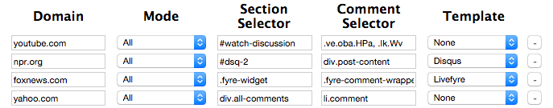
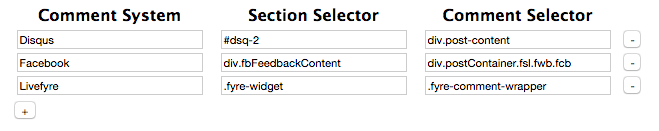
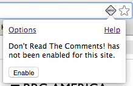
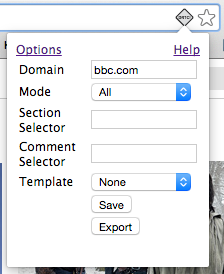

Don't Read the Comments! Help
What DRTC! actually does and stuff here.
Website Profiles
DRTC! uses profiles to know which page elements to block on a website.
Domain
DRTC! determines which site your browser is on by using the domain part of the currently displayed page's URL. For example, if you're on http://www.bbc.com/news, the domain is www.bbc.com.
Each DRTC! profile has a domain parameter which determines which pages it will be applied to. A profile with the domain bbc.com, for example, will apply to any page with a URL beginning with bbc.com, but not bbc.co.uk.
DRTC! profiles can also use wildcards (*) in their domains to match multiple domains. For example, bbc.co* would match bbc.com and bbc.co.uk.
As a final example, DRTC! also ignores subdomains when looking for a matching profile. So, a profile with bbc.com would also match shop.bbc.com.
Mode
DRTC! operates in one of three modes, which can be set per profile.
- All mode blocks the entire comment section on the site's pages at once.
- Individual mode blocks comments individually, based on the comment severity threshold.
- Disabled mode causes DRTC! to not operate on the site at all.
Section and Comment Selectors
DRTC! profiles use CSS selectors to tell it which page elements to block. The section selector specifies the entire comment section on the page, while the comment selector specifies individual comments. Only one of these selectors is needed at a time: a section selector for All mode, and a comment selector for Individual mode.
DRTC! supports all standard selector syntax, including # for ids, . for classes, and , to join multiple selectors.
Learn more about using CSS selectors here.
Template
Because many websites use third-party comment systems, such as Disqus or Facebook, DRTC! defines common templates for these systems. These templates can be applied to the profile of a page using one of these systems to block the comments in one step.
Comment System Templates
Comment system templates are similar to profiles, in that they define a pair of section and comment selectors. When applied to a website profile, a template sets the profiles selectors to match its own. A template's selectors, as well as its name, can be edited just like a profile.
Page Action
A page action is an icon in Chrome's omnibar. DRTC!'s page action shows a yellow diamond icon when DRTC! is enabled on the current page, and a grayed-out version when it is not.
Clicking DTRC!'s page action lets you see and configure the DRTC! profile for the current page.
When DRTC! does not have a website profile matching the current page, it will show this message. You can click on "Enable" to start creating a profile.
The page action dialog automatically fills in the site's domain. From here, you can fill in the comment section and/or comment selectors, or choose a comment system template to use. (See below for more on creating a website profile.) Clicking "Save" will save your profile and reload the page, so that DRTC! can apply the new profile.
Options Page
The options page controls global settings for DRTC!.
Website Profiles
This table lists all website profiles defined by DRTC!. You can add more using the "+" button at the bottom, or change any current profiles right in the table. Remember to click "Save" to save your changes!
Comment System Templates
Here you can add and edit comment system templates, just like in the profiles table. You'll need to save a new template before it can be used in a website profile.
Comment Severity Threshold
When using Individual mode, DRTC! uses this setting to decide whether to hide an individual comment, based on what proportion of the words in it are in one of the bad word lists. A threshold of 0 (the default) causes DRTC! to hide all comments, and it can go up to 5.
Bad Word Lists
This section contains the bad word lists which DRTC! uses. The lists can be disabled individually, and additional words can be added to the custom list.
Don't Read the Comments! Philosophy
DRTC! is not about censorship. When used to control information consumption on a large scale, censorship is an impediment to freedom, and is ultimately futile. Censorship is a load of bollocks.
Individuals have a right to control for themselves what information they consume, as well as what they choose not to consume. It's become very fashionable, very Web 2.0, to include social features in every website big enough to support them. At best, they're unproductive, being beside the point of whatever main content you've come to see; at worst they are infested with trolls and acrimonious name-calling.
Don't Read The Comments! came out of an offhand remark I once made about how I often unconsciously scroll down to read comments, even though I know I'll regret it. DRTC! is intended to put an additional layer of decision between the habitual scroller and the waste of attention that awaits.
About
DRTC! was written by Dan Stuart in December 2013, and released sometime in the future. It is licensed under GPLv3. Github